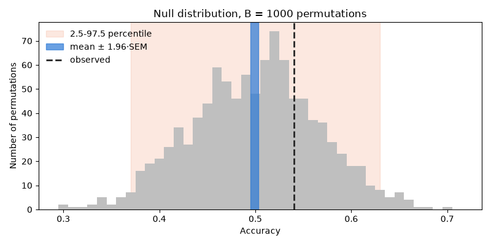
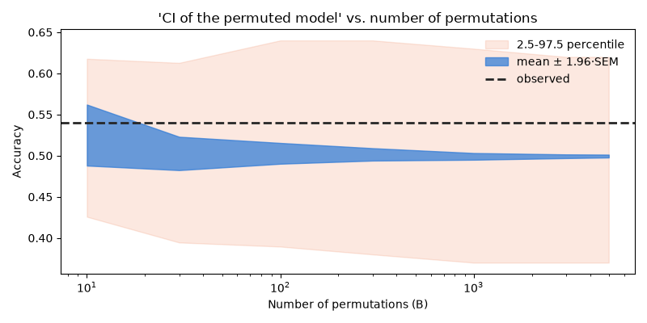
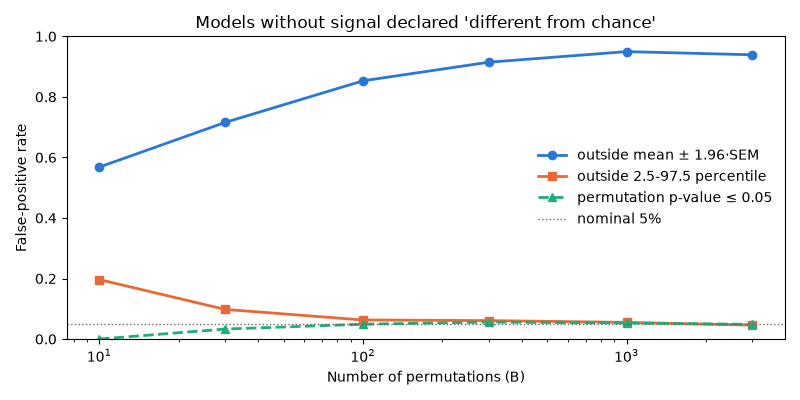
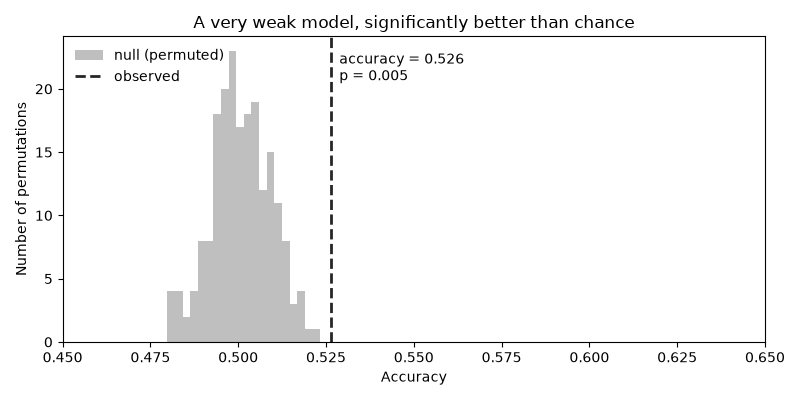
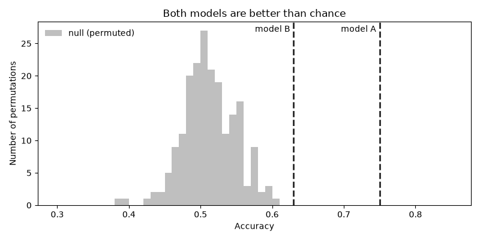
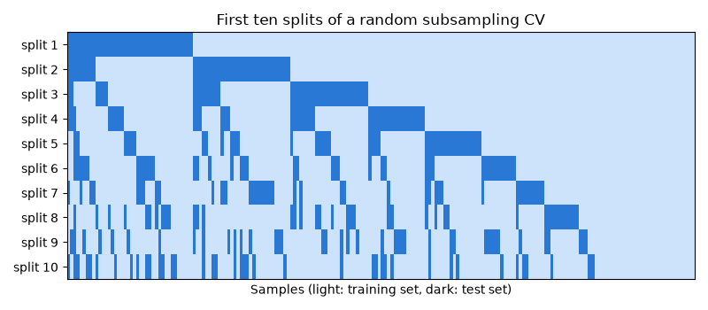
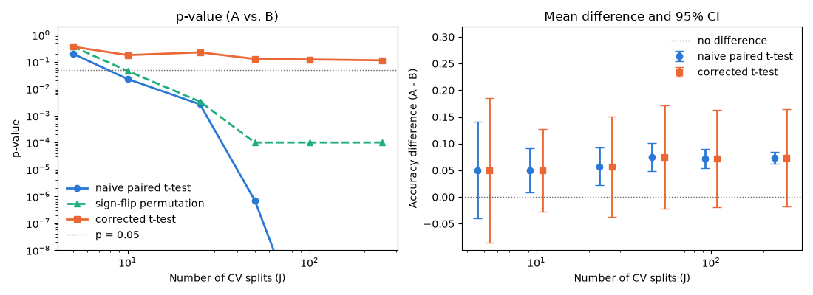
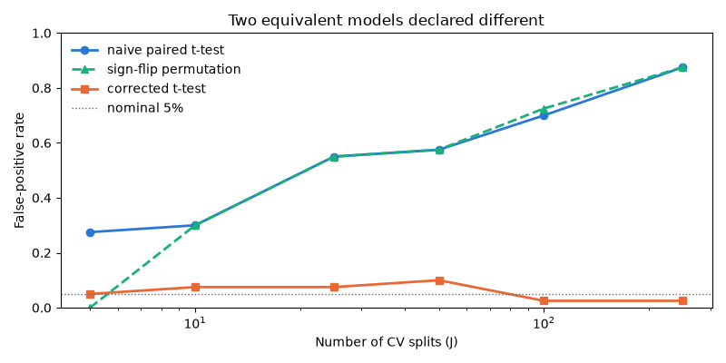

6.6. Statistical tests in machine learning¶
In Model Comparison we used julearn’s corrected t-test
to compare models. A question we are often asked is: why not simply use a
permutation test? A common practice goes like this: permute the labels
many times, build a “confidence interval” (CI) of the scores of the permuted
(chance) model, and claim that a model is good because its score lies
“outside the CI of the permuted model”.
In this section we will see where this reasoning breaks down and which tool is the right one for each question. In short, there are two different questions:
Is my model better than chance? This is what a label-permutation test answers, as long as it is done correctly.
Is model A better than model B? This is what the corrected resampled
t-testof Nadeau and Bengio [4] answers.
We will go through three parts:
Part 1: the “CI of the permuted model” can be made arbitrarily narrow, depending on how it is computed.
Part 2: even when done correctly, label permutation answers a different question.
Part 3: when comparing two models, the dependence between CV splits must be accounted for, and a permutation test on split-wise scores does not do that either.
All the data in this section is synthetic, so we know the ground truth. To keep the focus on the results, the code that runs the simulations and draws the figures is not shown, but it is included in the downloadable version of this page.
import numpy as np
import pandas as pd
from sklearn.linear_model import LogisticRegression
from sklearn.model_selection import (
StratifiedKFold,
StratifiedShuffleSplit,
permutation_test_score,
)
from julearn import run_cross_validation
from julearn.stats.corrected_ttest import corrected_ttest
from julearn.utils import configure_logging
configure_logging(level="ERROR")
X_types = {"continuous": [".*"]}
Part 1: The SEM trap¶
Let’s start with a dataset in which the target y is independent of the
features X. The two classes are balanced, and no model can do better
than chance. We evaluate a logistic regression with a 5-fold CV: this is
the observed score. Then, we build the null distribution by permuting the
labels B times, repeating the whole CV for each permutation, using
sklearn.model_selection.permutation_test_score().
rng = np.random.default_rng(5)
X_null = [f"f{i}" for i in range(10)]
df_null = pd.DataFrame(rng.normal(size=(100, 10)), columns=X_null)
df_null["y"] = rng.permutation(np.repeat([0, 1], 50))
cv = StratifiedKFold(n_splits=5, shuffle=True, random_state=42)
scores_null = run_cross_validation(
X=X_null,
y="y",
data=df_null,
X_types=X_types,
model="logit",
problem_type="classification",
cv=cv,
)
observed = scores_null["test_score"].mean()
_, perm_scores, _ = permutation_test_score(
LogisticRegression(),
df_null[X_null],
df_null["y"],
cv=cv,
n_permutations=5000,
random_state=42,
)
Since there is no signal, the observed score is just another draw from the null distribution. There are two ways in which a “CI of the permuted model” is usually computed:
SEM-based: mean of the null scores \(\pm 1.96 \cdot SEM\), with \(SEM = SD / \sqrt{B}\).
Percentile-based: the 2.5th to 97.5th percentile range of the null scores.
Let’s draw both on top of the null distribution, using 1000 permutations.
plot_null_distribution(perm_scores[:1000], observed)

The percentile band covers the spread of chance-level scores: the observed score falls well inside it, as it should. The SEM band is a thin sliver around the mean, and the observed score is outside of it. Judging by the SEM band, a model without any signal is “significant”.
The SEM measures how precisely we know the mean of the null distribution.
But the question is whether the observed score is an unusual draw from
that distribution. And the more permutations we run, the more precisely we
know the mean. Let’s see how both bands change with B.
plot_bands_vs_permutations(
perm_scores, observed, n_perms=[10, 30, 100, 300, 1000, 3000, 5000]
)

The SEM band collapses as \(1/\sqrt{B}\). With enough permutations, any observed score falls outside of it, unless it is exactly equal to the mean of the null distribution.
The percentile band does not shrink with B. More permutations only make
its edges more precise. With enough permutations, checking whether the
observed score lies outside this band is the same as checking whether the
permutation p-value is below \(\alpha = 0.05\). The number of
permutations does not bias the p-value. It only reduces its Monte Carlo
noise, and sets its minimum to \(1/(B + 1)\).
One dataset can be a coincidence, so let’s estimate how often each rule
declares a model without signal “different from chance”. Under the null
hypothesis, the observed score is exchangeable with the permuted scores
(this is the very assumption the permutation test relies on). Thus, we can
simulate many null experiments by drawing an “observed” score and B
null scores from the pool of 5000 chance-level scores we already have.
fpr_perm = simulate_false_positives(
perm_scores, n_perms=[10, 30, 100, 300, 1000, 3000], n_experiments=2000
)

With the SEM rule, the more permutations we run, the more often a model without any signal is declared different from chance, approaching 100%.
The percentile rule converges to the nominal 5% as B grows. With very
few permutations it is too liberal, because the 2.5th and 97.5th
percentiles of a handful of scores are poorly estimated. The permutation
p-value is valid for any B: up to simulation noise, it stays at or
below the nominal 5%. With few permutations it is conservative, because the
smallest p-value it can reach is \(1/(B + 1)\). In practice, use the
p-value, with at least a few hundred permutations.
Note
Here the test is two-sided (the score is “outside” the band). If only the upper edge is used (the score is “above” the band, which is what “better than chance” means), the SEM rule approaches 50% instead of 100%, which is still far from the nominal rate.
Part 2: “Better than chance” is a different question¶
A correctly computed label-permutation test (as in
sklearn.model_selection.permutation_test_score(), see Ojala and
Garriga [6]) tests the null hypothesis that X and y are
independent. In other words, it answers: is the model better than chance?
This is a low bar. With enough data, almost any model passes it. Let’s build a large dataset (5000 samples) with a very weak signal.
rng = np.random.default_rng(42)
df_weak = pd.DataFrame(rng.normal(size=(5000, 10)), columns=X_null)
df_weak["y"] = (0.1 * df_weak["f0"] + rng.normal(size=5000) > 0).astype(int)
score_weak, perm_weak, pvalue_weak = permutation_test_score(
LogisticRegression(),
df_weak[X_null],
df_weak["y"],
cv=cv,
n_permutations=200,
random_state=42,
)
print(f"Accuracy: {score_weak:.3f}, p-value: {pvalue_weak:.3f}")

Accuracy: 0.526, p-value: 0.005
The model is “significantly better than chance”, with the smallest p-value that 200 permutations can give. Yet it is barely above 50% accuracy. Whether it is useful is a question that no statistical test answers.
Now consider the more common situation: two models, both above chance. We
generate a dataset with 200 samples and two blocks of five features each,
a* and b*. Both blocks are, by construction, equally informative
about y. Model A only uses the a* features, and model B only uses
the b* features. Over repeated samples of the data, both models have
exactly the same expected performance.
df_blocks, X_a, X_b = make_two_blocks(seed=0)
score_a, perm_a, pvalue_a = permutation_test_score(
LogisticRegression(), df_blocks[X_a], df_blocks["y"], cv=cv
)
score_b, perm_b, pvalue_b = permutation_test_score(
LogisticRegression(), df_blocks[X_b], df_blocks["y"], cv=cv
)
print(f"Model A: accuracy = {score_a:.3f}, p-value = {pvalue_a:.3f}")
print(f"Model B: accuracy = {score_b:.3f}, p-value = {pvalue_b:.3f}")

Model A: accuracy = 0.750, p-value = 0.010
Model B: accuracy = 0.630, p-value = 0.010
Both models are far outside of the null distribution (the null distributions of both models overlap, so we show them together). Model A is more than 10 points ahead of model B on this dataset. Does this mean that it is the better model? No, for two reasons:
Both scores lying outside the null band says nothing about the difference between them. It is a test of each model against chance, not of one model against the other.
The observed score is itself a noisy CV estimate. Comparing it to a null band ignores its own uncertainty.
To compare two models, we need a test about their difference.
Part 3: Comparing two models and the dependence between splits¶
To compare models A and B, we evaluate both with the same CV splitter, so
the scores are paired split by split. Following Nadeau and Bengio [4], we
use random subsampling: each split draws a random 20% of the samples as
test set and trains on the remaining 80%, independently of the other
splits. In scikit-learn, this is
StratifiedShuffleSplit. We use 250
splits. Before looking at the results, let’s look at the splits themselves.
Each row is one split, each column one sample.
cv_subsampling = StratifiedShuffleSplit(
n_splits=250, test_size=0.2, random_state=42
)

Every training set uses 80% of the samples, so any two training sets share at least 75% of their samples. Test sets overlap too: a sample can be in the test set of many splits, or of none. The models trained in each split are therefore very similar to each other, and so are their scores. Adding splits re-samples the same 200 samples: it adds splits, but not data. Keep this in mind, we will come back to it.
Now let’s run both models with julearn and compare them using the
corrected t-test.
scores_a = run_cross_validation(
X=X_a,
y="y",
data=df_blocks,
X_types=X_types,
model="logit",
problem_type="classification",
cv=cv_subsampling,
)
scores_b = run_cross_validation(
X=X_b,
y="y",
data=df_blocks,
X_types=X_types,
model="logit",
problem_type="classification",
cv=cv_subsampling,
)
scores_a["model"] = "A"
scores_b["model"] = "B"
print(corrected_ttest(scores_a, scores_b))
metric t-stat p-val model_1 model_2 p-val-corrected
0 test_score 1.589437 0.113231 A B 0.113231
The difference between the two models is not significant. But how does
this compare to other tests? For different numbers of splits J, we
compute three tests on the J split-wise differences of the scores:
A naive paired t-test, which treats the split-wise differences as independent samples.
A sign-flip permutation test on the split-wise differences. Under the null hypothesis, the sign of each difference is random. We use 10000 permutations, so Monte Carlo noise is not an issue.
julearn’s corrected t-test, the corrected resampled t-test of Nadeau and Bengio [4]. It inflates the variance of the mean difference by \((1/J + n_{test}/n_{train})\) instead of \(1/J\).
We also compute the 95% CI of the mean difference for both t-tests. Since
StratifiedShuffleSplit draws its splits
one after the other from the same random state, the first J splits of
a 250-split CV are the same as those of a J-split CV, so we can use
subsets of the scores we already have.
all_n_splits = [5, 10, 25, 50, 100, 250]
comparison = compare_tests(scores_a, scores_b, all_n_splits)

As we add splits, the naive t-test and the sign-flip permutation test drift towards “significance” (the naive p-value keeps going down, well below the bottom of the plot). The sign-flip p-value only stops at \(1/(10000 + 1)\) because that is the smallest p-value 10000 permutations can give. The naive CI shrinks around the mean difference until it no longer includes zero. Yet we did not collect any new data.
This is the dependence between splits we saw above. Adding splits reduces the variance due to the choice of splits, but not the variance due to the finite dataset. Both the naive t-test and the sign-flip test treat each split as a new independent sample, so they underestimate the uncertainty and become anticonservative.
The corrected t-test adds the \(n_{test}/n_{train}\) term, which does not vanish as the number of splits grows. Its p-value stays stable, and its CI always includes zero.
Again, one dataset can be a coincidence. Since we know that models A and B have the same expected performance, any “significant” difference is a false positive. Let’s repeat the comparison on 40 independently generated datasets and count how often each test rejects the null hypothesis at \(\alpha = 0.05\).
fpr_cv = simulate_model_comparisons(n_datasets=40, n_splits=all_n_splits)

The naive t-test and the sign-flip permutation test declare a difference between two equivalent models more and more often as we add splits. (With only 5 splits, the sign-flip test never rejects: there are only \(2^5 = 32\) possible sign flips, so its smallest p-value is \(2/32 > 0.05\).) The corrected t-test stays close to the nominal 5%, regardless of the number of splits. With 40 datasets, each false-positive rate is only estimated within about \(\pm 7\) percentage points, so the differences between 2.5% and 10% are noise. The empirical behavior of these tests, including how replicable their conclusions are, was studied in detail by Bouckaert and Frank [5].
So the problem is not t-test vs. permutation test. The problem is ignoring the dependence between splits, and a permutation test on split-wise scores makes the same mistake as the naive t-test.
Take-home messages¶
Question |
Use |
Do not use |
|---|---|---|
Is my model better than chance? |
Label-permutation p-value, e.g.
|
A “CI of the permuted model” built with the SEM. |
Is model A better than model B? |
The corrected t-test, |
A naive t-test or a permutation test on the split-wise scores. Two models being “better than chance”. |
Passing the “better than chance” test does not mean that the model is useful.
Neither the number of permutations nor the number of CV splits should be able to change your conclusion. If it does, the test is wrong.
Total running time of the script: (2 minutes 47.844 seconds)